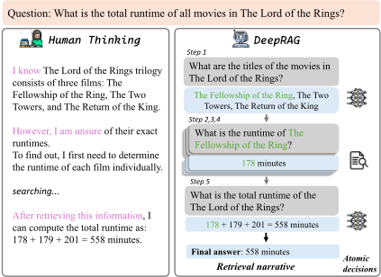
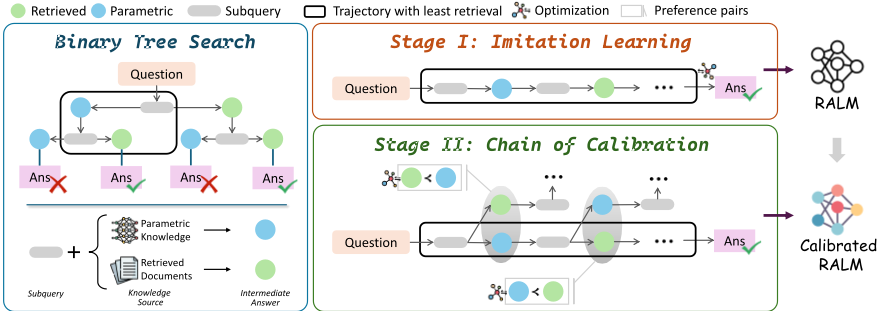
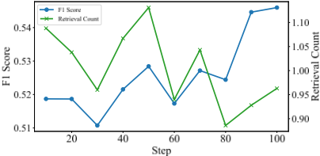
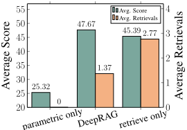
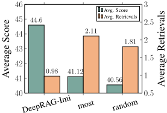
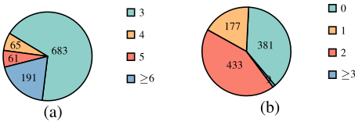
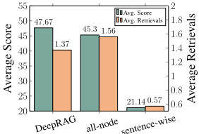
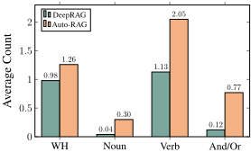

DeepRAG：让大语言模型逐步思考以按需检索
该论文针对 RAG 在结合推理时的两大痛点——复杂问题难以生成精确的原子化子查询、迭代检索冗余且会引入噪声降低回答质量——提出 DeepRAG 框架，将检索增强推理建模为 Markov Decision Process（MDP）。方法上通过 Binary Tree Search 为每个子查询探索'参数化知识作答'与'外部检索作答'两条路径，用 Imitation Learning 学习'子查询生成-原子决策-中间作答'模式，再用 Chain of Calibration 基于偏好数据校准模型对自身知识边界的认知，从而在每一步动态决定是否检索。实验显示 DeepRAG 在 in-distribution、OOD、时间敏感与异构知识库 QA 上超越现有自适应与推理式 RAG 方法，答案准确率提升 26.4%，同时平均检索次数更低（如 2WMQA 上 0.92 vs 1.25）。对团队而言，这是'按需检索与知识边界校准'的代表性工作，其决策建模与评测协议可直接借鉴到知识库问答与 Agent 检索工具调用策略中，但完整复现需要对开源模型做两阶段微调。
LLM 因参数化知识在时效性、准确性与全面性上的不足而产生严重的事实性幻觉；现有 RAG 在增强推理时面临挑战：复杂查询需要多步分解但 LLM 难以生成精确、原子化的子查询，且迭代检索方法往往对每个子查询都强制检索——不必要的检索冗余、引入噪声并降低回答质量，而让 LLM 自主决定检索时机又因无法准确识别自身知识边界而不可靠。
将检索增强推理建模为 MDP：状态为当前部分解答（问题+历史子查询与中间答案），动作为子查询生成与原子决策（终止/继续、直接作答/检索），奖励函数在答案正确前提下按检索成本扣减。框架分三步：1) Binary Tree Search：对每个子查询构建二叉树，分别探索基于参数化知识与外部检索的两条作答路径；2) Imitation Learning：用优先队列搜索检索成本最低且最终答案正确的路径，合成数据微调模型（对检索文档做 masked loss 防止学到噪声文本）；3) Chain of Calibration：基于最优路径为每个子查询构造'直接作答 vs 检索作答'的偏好对，微调模型校准知识边界、精确判断是否需要检索。另探索了以 GRPO 为目标的 RL 扩展，奖励为答对时按检索次数线性扣减。
答案准确率提升 26.4%（摘要口径）；引言中报告相对现有方法准确率提升 21.99% 并同时提高检索效率
在知识库信息稀疏或缺失的场景下，PopQA 与 WebQuestions 上分别取得 2.63 与 4.57 的 F1 提升
检索效率：2WMQA 平均检索次数 0.92（对比基线 1.25），WebQuestions 0.12（对比 0.36），以更低检索成本取得更高准确率
问题分解分析：多数问题需 3-5 步分解，检索尝试集中在 0-2 轮；子查询中代词与连词更少，分解更简洁
知识边界相关性分析：在 F1、balanced accuracy、MCC 指标上优于 FLARE、DRAGIN、TAARE 等自适应检索方法，检索决策与参数化知识边界相关性更强
RL（GRPO）设置下，2WikiMultihopQA 的 F1 随训练逐步提升且平均检索次数下降
与强基线对比：平均性能超过 QwQ-32B-preview 与 gpt-4o-turbo，尤其在时间敏感 QA 任务上
消融实验：最小检索成本路径选择优于最大成本与随机选择；基于最优路径节点构造偏好对优于全节点构造与句级偏序对（后者导致过度依赖内部知识、性能下降）
与三类已有自适应 RAG 不同：分类器式方法需额外训练线性头，置信度式方法依赖对阈值敏感的不确定性指标，LLM 自主决策式方法难以准确识别知识边界——DeepRAG 不引入额外参数、不依赖不可靠的不确定性度量，而是利用 LLM 生成能力通过二叉树搜索合成数据来显式探索知识边界。与 Self-RAG、Auto-RAG、AirRAG 等依赖大量检索或采样开销的方法不同，DeepRAG 在奖励中显式优化检索效率，并以端到端方式训练任意模型'何时检索、检索什么'；与 RL 式检索增强方法忽略奖励中检索效率不同，其奖励设计同时兼顾正确性与检索成本。
相关度级别：high
命中能力域：3.1 上下文工程与记忆 | 3.3 Agent 架构与工具使用 | 3.5 评测与可靠使用
理由：论文核心是 RAG/检索增强的上下文组织策略，直接命中 3.1（RAG/检索增强、结构化上下文组织）；其'原子决策'本质是 Agent loop 中每一步是否调用检索工具的工具调用时机决策，与 3.3 的工具调用与执行可靠性相关；同时论文显式以检索成本为优化目标，并给出用 CoT 结果作为参数化知识指标、以 F1/balanced accuracy/MCC 评估检索决策质量的评测协议，对应 3.5 的成本效率优化与评测方法。团队构建知识库问答与研发提效流程时，'何时检索、何时不检索'是直接影响质量与成本的核心问题，该论文提供了系统化的建模、训练与评测方案。
建议动作：深入精读并做内部分享
arXiv:2502.01142v2 [cs.AI] 2025年6月8日
Xinyan Guan 1,2，Jiali Zeng 3，Fandong Meng 3，Chunlei Xin 1,2，Yaojie Lu 1，Hongyu Lin 1，Xianpei Han 1，Le Sun 1，Jie Zhou 3
1 中国科学院软件研究所中文信息处理实验室
2 中国科学院大学
腾讯公司微信AI模式识别中心，中国
{guanxinyan2022,chunlei2021,hongyu,luyaojie,xianpei,sunle}@iscas.ac.cn {lemonzeng,fandongmeng,withtomzhou}@tencent.com
大语言模型（Large Language Models, LLMs）已展现出卓越的推理能力，但由于其参数化知识在时效性、准确性和全面性方面的局限，其实际应用受到严重事实性幻觉的制约。与此同时，通过推理来增强检索增强生成（Retrieval-Augmented Generation, RAG）仍然具有挑战性，原因在于任务分解低效和检索冗余，这会引入噪声并降低响应质量。本文提出 DeepRAG，该框架将检索增强推理建模为马尔可夫决策过程（Markov Decision Process, MDP），从而实现合理且自适应的检索。通过迭代地分解查询，DeepRAG 在每一步动态决定是检索外部知识还是依赖参数化推理。实验表明，DeepRAG 提升了检索效率，并将答案准确率提高了 26.4%，证明了其在增强检索增强推理方面的有效性。1
大语言模型（Large Language Models, LLMs）在推理方面已展现出可观的潜力（Plaat et al., 2024）。然而，其在容量与能力上的局限导致了显著的事实性幻觉问题，这源于其参数化知识在时效性、准确性和全面性方面所面临的挑战（Zhang et al., 2023; Huang et al., 2023）。为缓解这些问题，检索增强生成（Retrieval-Augmented Generation, RAG）作为一种有前景的方法被提出。通过整合来自知识库或搜索引擎的相关信息，RAG 提升了模型响应的事实准确性（Zhao et al., 2024）。
然而，将推理融入 RAG 仍面临若干挑战（Gao et al., 2025）。一个重要问题是，复杂查询往往需要多步分解才能建立连贯的推理过程（Radhakrishnan et al., 2023; Guan et al., 2024a）。迭代检索被提出作为一种解决方案，用于持续更新检索结果，以应对生成过程中出现的动态信息需求（Yue et al., 2024; Wang et al., 2025）。尽管如此，LLMs 常常难以生成精确且原子化的子查询，而这类子查询对于实现更有效的检索和问题分解至关重要（Wu et al., 2024）。从 RAG 的角度来看，迭代检索理想情况下应以自适应方式，基于当前问题和已有信息生成下一个原子查询。如图 1 所示，该过程在逻辑上环环相扣、逐步推进。具体而言，步骤 2-4 中查找每部电影时长的目标，正是源自步骤 1 中对《指环王》系列三部曲片名的识别。
1 https://github.com/gxy-gxy/DeepRAG

此外，检索并非总是必需的（Jeong et al., 2024）。有些查询依赖外部知识（步骤 2-4），而另一些则可以仅通过 LLM 的推理能力来解决（步骤 5 需要总结先前信息）。而且，LLMs 已展现出自身即可充当知识库的能力（Petroni et al., 2019）（例如步骤 1 中的三个电影片名便广为人知）。不必要的检索可能造成冗余，引入噪声，并降低所生成响应的质量（Chen et al., 2023; Tan et al., 2024; Yu et al., 2022）。
为解决这些问题，我们提出了 DeepRAG，这是一个受人类按需搜索互联网的方式启发的新框架。该框架旨在通过将检索过程建模为马尔可夫决策过程（MDP），来增强检索增强生成（Retrieval-Augmented Generation, RAG）中的推理能力。DeepRAG 包含两个主要组件：检索叙事（retrieval narrative）和原子决策（atomic decisions），二者共同构建了一个策略化且自适应的检索系统。如图 1 所示，检索叙事通过生成子查询来确保结构化的工作流程，这些子查询基于先前内容寻求额外信息。对于每个子查询，原子决策会动态决定是检索外部知识，还是仅依赖大语言模型（LLM）的参数化知识。
如图 2 所示，我们的框架由三个组件构成：1）二叉树搜索（Binary Tree Search），针对与给定问题相关的每个子查询构建一棵二叉树，并基于参数化知识或外部知识探索路径。2）模仿学习（Imitation Learning），基于二叉树搜索提取能够以最小检索代价得到正确最终答案的推理过程，使模型学会“子查询生成 - 原子决策 - 中间答案”这一模式。3）校准链（Chain of Calibration），通过细化每个原子决策来校准 LLM 的内部知识，使其能够就检索的必要性做出准确的原子决策。通过显式增强 LLM 识别自身知识边界的能力，我们可以以端到端的方式训练任意模型，使其能够动态决定何时检索以及检索什么内容。
我们在分布内（in-distribution）、分布外（out-of-distribution）、时间敏感（time-sensitive）以及异构知识库数据集上验证了 DeepRAG 的有效性。实验结果表明，DeepRAG 显著优于现有方法，准确率提升了 21.99%，同时还提高了检索效率。进一步分析表明，DeepRAG 的检索决策与参数化知识之间表现出更强的相关性，这意味着其对知识边界的校准更为有效。
自适应检索增强生成（Adaptive Retrieval-Augmented Generation）现有的自适应 RAG 方法大致可分为三类：基于分类器的方法（Cheng et al., 2024; Jeong et al., 2024），这类方法需要为检索决策额外训练线性头（linear head）；基于置信度的方法（Jiang et al., 2023; Su et al., 2024; Dhole, 2025），这类方法严重依赖与阈值相关的不确定性度量；以及基于大语言模型（LLM）的方法（Asai et al., 2023; Zhang et al., 2024），这类方法虽然能够生成检索决策，但往往无法准确识别自身的知识边界，因此将检索时机决策交由模型来判断并不可靠。我们的方法利用 LLM 固有的生成能力，在 RAG 场景中探索知识边界。这一设计在保持模型原生生成能力的同时，既无需引入额外参数，也无需依赖不可靠的不确定性度量。
RAG 领域的最新进展日益强调推理能力的整合。Search-o1（Li et al., 2025）将检索融入推理过程以构建智能体系统，但其应用仅限于推理模型（Chen et al., 2025）。Self-RAG（Asai et al., 2023）和 Auto-RAG（Yu et al., 2024）通过在检索增强框架内进行自动数据合成来增强推理能力，而 AirRAG（Feng et al., 2025）则将蒙特卡洛树搜索与自洽性技术相结合。然而，这些方法往往严重依赖于大量的检索或采样开销。更近期的研究则探索了利用强化学习来提升检索质量（Jin et al., 2025; Song et al., 2025; Gao et al., 2024），但这些方法在奖励函数中普遍忽视了检索效率。相比之下，DeepRAG 提供了一种灵活的端到端解决方案，使任意模型能够基于其不断演进的推理过程，按需逐步检索信息。
知识边界 LLM 难以准确区分自己知道什么与不知道什么（Yin et al., 2023; Kapoor et al., 2024a; Yin et al., 2024）。通常需要额外的微调（Kapoor et al., 2024b）或精确的探测（Cheng et al., 2024）来校准模型的认知。我们的方法在 RAG 场景中探索知识边界。

在本节中，我们介绍所提出的方法 DeepRAG。DeepRAG 的核心思想是将问题分解、原子决策与最终答案生成的过程建模为马尔可夫决策过程（Markov Decision Process, MDP）。给定一组有监督数据集，我们首先利用二叉树搜索合成用于模仿学习的数据，使模型能够学习有效的检索模式。随后，我们采用二叉树搜索生成偏好数据，进一步校准 LLM 对自身知识边界的认知。在接下来的小节中，我们将详细描述 DeepRAG 的各个组成部分。
基于上述公式化表述，大语言模型（LLM）将给定问题迭代地分解为若干子查询（subquery），每个子查询均由先前获取的信息推导而来。详细的生成指令在附录 A.2 中给出，答案格式如下。
Answer format Question : <Question> Follow up : <Subquery1> Let's search the question in Wikipedia. Context: <Paragraph Text> Intermediate answer : <Intremediate Answer1> Follow up : <Subquery2> Intermediate answer : <Intermediate Answer2> ...... So the final answer is : <Answer>
随后，我们实现二叉树搜索（binary tree search），为每个子查询构建整合了不同检索策略的推理路径。如图 2 所示，给定一个问题，模型会生成第 i 个子查询，并探索两种作答策略：直接利用参数化知识（蓝色节点），或检索外部文档（绿色节点）。因此，对于与给定问题相关的每个子查询，我们都可以构建一棵二叉树，并探索基于参数化知识或外部知识的路径。
我们提出了一种利用二叉树来识别最优推理过程的算法，该推理过程能够在最小化检索成本的同时导向正确的最终答案，对应于 3.1 节中定义的最高奖励。基于合成得到的最优推理数据，我们对模型进行微调，以改进其终止决策与原子决策，同时增强其查询分解能力并生成忠实的中间答案。
数据合成 如 Alg. 1 所示，我们采用优先队列，依据检索成本来维护推理轨迹。这使得我们能够通过迭代地构建并评估潜在推理路径来高效地探索它们，直至找到正确答案，或在给定约束条件下穷尽所有可行选项。对于在穷尽所有选项后仍无法获得正确答案的实例，我们将其丢弃。
通过上述合成过程，所得到的训练数据集包含自适应推理过程，可用于帮助任意大语言模型（LLM）增强其检索增强生成（RAG）能力。
输入：问题 x，答案 y，语言模型 M，检索器 R，最大历史长度 T
输出：最优推理过程 s ∗ 或 null
1: 初始化优先队列 PQ ← { ([ x ], 0) } ▷ (轨迹, 检索次数)
2: while PQ 非空 do
3: ( h , r ) ←PQ . dequeue () ▷ 获取检索次数最低的轨迹
4: q ←M ( h ) ▷ 子查询生成
5: if ShouldAnswer ( q ) or length ( h ) > T then
6: o ←M ( h , q ) ▷ 最终答案
7: if IsEqual ( o , y ) then return h
8: else
9: a ←M ( h , q ) ▷ 直接答案
10: PQ . enqueue (([ h , ( q , a )], r ))
11: d ←R ( q ) ▷ 检索文档
12: a ←M ( h , q , d ) ▷ 检索答案
13: PQ . enqueue (([ h , ( q , ( d , a ))], r +1))
14: return null
训练目标 我们对检索到的文档实现了掩码损失函数，以防止模型学习到可能对其性能产生负面影响的无关或含噪文本。详细的目标函数如附录 B.1 所示。
基于第 3.1 节中的马尔可夫过程，我们确定了 DeepRAG 的四个关键优化方面：终止、原子决策、查询分解以及中间答案生成。与其他方面不同，原子决策要求模型识别自身的知识边界，以做出精确的判断。
我们提出了一种针对每个子查询动态优化原子决策的方法，而不是在完整推理路径上训练大语言模型（LLM）。我们的方法包含两个关键组成部分：（1）合成偏好数据，以确定何时需要检索；（2）利用这些数据，通过校准链（Chain of Calibration）训练对 LLM 进行微调，以增强其基于内部知识边界做出明智原子决策的能力。
合成偏好数据 首先，我们基于 Alg. 1，使用在阶段 I 中训练得到的模型识别出一条检索次数最少的最优路径。该路径为每个子查询提供了最优的原子决策，即确定是否需要检索。沿此路径，我们为每个子查询构建偏好对，以标示首选的检索选择。例如，在图 2 中，最优路径可能建议使用参数化知识回答第一个子查询，而对第二个子查询则需要进行文档检索。据此，我们生成偏好对：对第一个子查询偏向参数化知识，对第二个子查询偏向检索。这一过程使 LLM 学会何时检索外部信息，从而提升其最大化利用参数化知识的能力，并减少不必要的检索。
校准链目标 我们在合成的偏好数据上，使用校准链目标对 LLM 进行微调。给定第 i 个子查询和状态 s i = [ x , ( q 1 , r 1 ), · · · , ( q i - 1 , r i - 1 )] ，我们有两个不同的中间答案 r 1 i = a 1 i 和 r 2 i = ( d i , a 2 i ) 。基于上述合成过程，我们可以标记出哪个 r i 是更优的，并对其进行优化。详细公式如附录 B.2 所示。
我们在实验中使用了六个开放域问答（QA）数据集。我们将训练数据集视为分布内（in-distribution）数据，将未见过的数据集视为分布外（out-of-distribution）数据。分布内数据集包括 HotpotQA (Yang et al., 2018) 和 2WikMultihopQA (Ho et al., 2020)，分布外数据集由 CAG (Pan et al., 2024)、PopQA (Mallen et al., 2022)、WebQuestions (Berant et al., 2013) 和 MuSiQue (Trivedi et al., 2022) 组成。具体而言，我们采用 CAG 的时间敏感子集来评估时序推理能力。此外，WebQuestions 构建于 Freebase 之上，用于评估当知识库中可能缺失相关信息时模型的鲁棒性。
我们使用以下基线来评估性能：CoT (Wei et al., 2022) 和 CoT*，二者均采用从训练数据集中提取的 8-shot 示例。星号 (*) 表示模型输出是使用与训练 DeepRAG 所用的相同数据进行训练得到的。CoT-Retrieve 和 CoT-Retrieve* 则基于查询，利用检索到的相关文档对上下文中的八个示例进行扩充。IterDRAG (Yue et al., 2024) 指基于上下文学习（in-context learning）逐步分解问题和答案。AutoRAG (Yu et al., 2024) 使用训练好的模型迭代地分解问题并检索相关文档以进行回答。Search-o1 (Li et al., 2025) 利用特殊标记来提示推理模型根据需要自主调用检索。
UAR (Cheng et al., 2024) 采用一个训练好的分类器来确定何时进行检索。FLARE (Jiang et al., 2023) 和 DRAGIN (Su et al., 2024) 是基于置信度的方法，它们根据词元（token）重要性和不确定性来决定检索时机。TAARE (Zhang et al., 2024) 则允许大语言模型（LLM）自行判断何时需要检索。
我们在两个问答（QA）数据集上训练目标模型：HotpotQA 和 2WikiMultihopQA。对于模仿学习，我们从每个数据集中随机采样 4,000 个样本。为了增强模型的问题分解和基于上下文的生成能力，我们采用 Qwen-2.5-72B 来生成图 2 中的灰色节点（查询分解）和绿色节点（检索到的答案），并使用目标模型生成蓝色节点（参数化答案），以进行数据合成。对于校准链（chain of calibration），我们从每个数据集中额外采样 1,000 个样本。性能采用精确匹配（Exact Match, EM）和 F1 分数进行评估。
遵循 Su et al. (2024) 的做法，我们采用 BM25 进行检索，并使用 Wikipedia 2 作为知识库。对于 CAG 中的时效性问题，我们使用数据集提供的最新段落作为知识库。我们选择 Llama-3-8BInstruct (Dubey et al., 2024)、Qwen-2.5-7B 和 Qwen-2.5-32B (Yang et al., 2024) 作为目标模型。为了实现 Search-o1，我们采用 DeepSeek-R1 (Guo et al., 2025) 的蒸馏系列模型，因为该方法依赖于推理模型。
表1的结果表明，DeepRAG在不同场景下均展现出卓越的性能与鲁棒性。
DeepRAG通过逐步思考进行检索，在大多数数据集上展现出卓越性能。我们的方法在各种骨干模型和模型规模上均持续优于现有方法。与基于推理的RAG基线和自适应RAG基线相比，DeepRAG在所有数据集上均表现更优，证明了结构化检索叙事与按需原子决策的有效性。具体而言，IterDRAG有限的表现凸显了同时学习查询分解与忠实回答的必要性。诸如FLARE等基于置信度的方法由于依赖不稳定的预定义指标，难以确定最优检索时机。此外，我们观察到基于置信度的方法存在不稳定问题，其性能对阈值选择高度敏感。同时，诸如AutoRAG等迭代检索方法在未找到高度相关信息时，往往会陷入持续的检索循环。
2 https://dl.fbaipublicfiles.com/dpr/wikipedia_ split/psgs_w100.tsv.gz
| Types. | Methods. | in-distribution.Hotpot QA.EM | in-distribution.Hotpot QA.F1 | in-distribution.2WikiMultihopQA.EM | in-distribution.2WikiMultihopQA.F1 | out-of-distribution.CAG.EM | out-of-distribution.CAG.F1 | out-of-distribution.PopQA.EM | out-of-distribution.PopQA.F1 | out-of-distribution.Web Question.EM | out-of-distribution.Web Question.F1 | out-of-distribution.MuSiQue.EM | out-of-distribution.MuSiQue.F1 | Avg |
|---|---|---|---|---|---|---|---|---|---|---|---|---|---|---|
| Llama-3-8B | Llama-3-8B | Llama-3-8B | Llama-3-8B | Llama-3-8B | Llama-3-8B | Llama-3-8B | Llama-3-8B | Llama-3-8B | Llama-3-8B | Llama-3-8B | Llama-3-8B | Llama-3-8B | Llama-3-8B | Llama-3-8B |
| CoT | 27.20 | 37.75 | 28.20 | 34.85 | 7.17 | 10.41 | 21.20 | 25.33 | 25.20 | 40.56 | 13.70 | 22.97 | 24.54 | |
| CoT-Retrieve | 34.90 | 46.85 | 35.80 | 43.41 | 55.45 | 64.08 | 32.80 | 45.87 | 22.90 | 39.22 | 19.10 | 28.18 | 39.05 | |
| CoT* | 21.80 | 31.69 | 25.60 | 30.89 | 5.30 | 7.58 | 23.10 | 25.31 | 26.80 | 40.20 | 4.80 | 13.85 | 21.41 | |
| Reasoning | CoT-Retrieve* | 22.50 | 32.15 | 23.70 | 29.21 | 44.86 | 55.69 | 38.70 | 45.64 | 17.60 | 29.20 | 5.70 | 11.60 | 29.71 |
| Reasoning | IterDRAG | 23.20 | 30.95 | 19.60 | 24.80 | 38.32 | 46.18 | 22.70 | 34.53 | 15.90 | 26.79 | 12.40 | 17.75 | 26.09 |
| Reasoning | Auto-RAG | 25.80 | 36.09 | 23.00 | 30.09 | 49.22 | 59.61 | 27.80 | 42.02 | 17.40 | 32.94 | 19.10 | 28.33 | 32.62 |
| Reasoning | Search-o1 | 14.80 | 24.08 | 22.20 | 27.10 | 3.43 | 6.61 | 10.30 | 13.54 | 15.30 | 29.60 | 5.40 | 11.98 | 15.36 |
| Adaptive | FLARE | 23.80 | 32.88 | 30.30 | 37.45 | 34.89 | 43.45 | 28.80 | 40.61 | 28.80 | 40.61 | 14.50 | 23.57 | 31.64 |
| DRAGIN | 27.60 | 38.05 | 29.10 | 35.68 | 4.05 | 7.18 | 22.60 | 28.53 | 21.20 | 38.72 | 11.80 | 19.97 | 23.71 | |
| UAR | 29.70 | 40.66 | 34.80 | 42.40 | 52.96 | 61.53 | 33.00 | 45.95 | 22.70 | 39.10 | 19.10 | 28.38 | 37.52 | |
| TAARE | 30.60 | 41.43 | 35.20 | 42.85 | 52.96 | 61.59 | 33.20 | 46.01 | 23.40 | 39.56 | 18.60 | 27.55 | 37.75 | |
| Ours | DeepRAG-Imi | 35.10 | 46.59 | 47.20 | 52.33 | 50.47 | 59.55 | 43.60 | 48.50 | 30.00 | 41.76 | 22.30 | 30.46 | 42.32 |
| Ours | DeepRAG | 40.70 | 51.54 | 48.10 | 53.25 | 52.96 | 61.92 | 42.50 | 47.80 | 32.70 | 45.24 | 22.50 | 30.40 | 44.13 |
| Qwen-2.5-7B | Qwen-2.5-7B | Qwen-2.5-7B | Qwen-2.5-7B | Qwen-2.5-7B | Qwen-2.5-7B | Qwen-2.5-7B | Qwen-2.5-7B | Qwen-2.5-7B | Qwen-2.5-7B | Qwen-2.5-7B | Qwen-2.5-7B | Qwen-2.5-7B | Qwen-2.5-7B | Qwen-2.5-7B |
| Resaoning | CoT | 18.90 | 27.81 | 23.40 | 28.97 | 3.12 | 5.71 | 15.20 | 19.20 | 18.30 | 34.86 | 5.60 | 13.12 | 17.85 |
| CoT-Retreive | 24.90 | 34.78 | 18.60 | 23.44 | 41.43 | 51.47 | 27.30 | 41.20 | 15.10 | 29.84 | 6.70 | 15.10 | 27.49 | |
| CoT* | 17.60 | 26.15 | 25.10 | 29.62 | 3.12 | 5.62 | 7.90 | 11.06 | 15.60 | 32.45 | 4.70 | 13.40 | 16.03 | |
| CoT-Retrieve* | 23.40 | 32.29 | 22.40 | 27.51 | 43.30 | 54.51 | 26.60 | 35.46 | 13.80 | 25.60 | 6.20 | 12.85 | 26.99 | |
| IterDRAG | 13.70 | 26.84 | 9.30 | 20.47 | 21.81 | 39.59 | 18.00 | 31.44 | 12.50 | 26.95 | 9.20 | 17.25 | 20.59 | |
| Search-o1 | 11.60 | 16.95 | 22.00 | 25.02 | 3.43 | 4.78 | 4.40 | 7.61 | 7.70 | 19.97 | 2.10 | 7.48 | 11.09 | |
| FLARE | 23.40 | 32.06 | 21.80 | 26.51 | 34.89 | 42.62 | 19.00 | 28.24 | 16.10 | 31.89 | 8.40 | 15.15 | 25.00 | |
| DRAGIN | 16.70 | 24.60 | 12.40 | 16.76 | 3.43 | 5.45 | 12.00 | 15.80 | 17.40 | 32.43 | 4.20 | 7.98 | 14.10 | |
| Adaptive | UAR | 24.50 | 34.22 | 23.90 | 28.20 | 34.89 | 43.92 | 27.00 | 40.47 | 16.60 | 32.28 | 7.10 | 15.62 | 27.39 |
| TAARE | 25.30 | 35.03 | 21.30 | 25.67 | 40.81 | 50.78 | 27.00 | 40.92 | 18.20 | 33.14 | 6.90 | 15.46 | 28.38 | |
| DeepRAG-Imi | 30.40 | 39.44 | 32.00 | 38.32 | 47.98 | 56.99 | 37.50 | 40.72 | 23.90 | 38.62 | 16.50 | 24.67 | 35.59 | |
| Ours | DeepRAG | 32.10 | 41.14 | 40.40 | 44.87 | 51.09 | 59.76 | 40.60 | 43.19 | 24.20 | 38.83 | 19.50 | 32.35 | 39.00 |
| Qwen-2.5-32B | Qwen-2.5-32B | Qwen-2.5-32B | Qwen-2.5-32B | Qwen-2.5-32B | Qwen-2.5-32B | Qwen-2.5-32B | Qwen-2.5-32B | Qwen-2.5-32B | Qwen-2.5-32B | Qwen-2.5-32B | Qwen-2.5-32B | Qwen-2.5-32B | Qwen-2.5-32B | Qwen-2.5-32B |
| CoT | 20.6 | 30.62 | 24.4 | 30.94 | 3.12 | 5.42 | 10.9 | 14.45 | 9.7 | 26 | 9.5 | 18.26 | 16.99 | |
| CoT-Retrieve | 28.6 | 39.43 | 27.9 | 36.73 | 39.56 | 49.97 | 33.8 | 45.91 | 17.2 | 34.15 | 12.9 | 21.98 | 32.34 | |
| Reasoning | Iter-DRAG | 22.9 | 38.26 | 19.6 | 35.70 | 33.02 | 45.61 | 20.3 | 33.2 | 13.3 | 27.57 | 17.6 | 27.8 | 27.91 |
| Search-o1 | 34 | 45.64 | 29.1 | 35.12 | 19 | 24.35 | 23.1 | 30.69 | 17.9 | 35.11 | 16.4 | 25.6 | 28.00 | |
| Ours | DeepRAG | 36.2 | 46.90 | 46.3 | 50.50 | 52.02 | 61.42 | 46.3 | 49.2 | 28.1 | 43.27 | 19.60 | 27.47 | 42.27 |
| Types. | Methods. | in-distribution.Hotpot QA.EM | in-distribution.Hotpot QA.F1 | in-distribution.2WikiMultihopQA.EM | in-distribution.2WikiMultihopQA.F1 | out-of-distribution.CAG.EM | out-of-distribution.CAG.F1 | out-of-distribution.PopQA.EM | out-of-distribution.PopQA.F1 | out-of-distribution.Web Question.EM | out-of-distribution.Web Question.F1 | out-of-distribution.MuSiQue.EM | out-of-distribution.MuSiQue.F1 | Avg |
DeepRAG在时间敏感和分布外（out-of-distribution）设置中展现出卓越的泛化能力与鲁棒性。在时间敏感数据集CAG上，与其他自适应检索方法和推理式检索方法相比，DeepRAG表现良好。值得注意的是，CoT-Retrieve在CAG上的表现优于DeepRAG。我们将此归因于时间敏感设置的核心挑战在于大多数情况下都需要触发检索。此外，即使在知识库中相关信息可能稀疏或缺失的场景下，DeepRAG在PopQA和WebQuestions上仍分别取得了2.63和4.57的显著F1分数提升。
通过从自合成数据中学习，DeepRAG在有效探索知识边界的同时，将幻觉风险降至最低。TAARE的表现往往不及直接检索方法，这凸显了其内部知识与冗长内容之间的不匹配。此外，诸如CoT*和CoT-Retrieve*等激进的微调方法通过迫使模型学习超出其知识边界的知识，导致模型性能下降。DeepRAG通过利用自合成数据，在微调过程中谨慎地保留模型能力，在保持性能的同时有效防止了额外的幻觉。
为了评估我们方法的效率，我们在 WebQuestions 数据集上比较平均检索次数，并报告每个查询的平均计算时间。计算时间在一台 H20*8 机器上测得。如表 2 所示，我们有以下观察：1)
| Method | EM | Avg. Retrievals.All | Avg. Retrievals.Correct | Avg. Retrievals.Incorrect | Time. |
|---|---|---|---|---|---|
| FLARE | 28.8 | 0 | 0 | 0 | 2.58 |
| DRAGIN | 21.2 | 0 | 0 | 0 | 1.36 |
| UAR | 22.7 | 0.96 | 0.95 | 0.97 | 0.43 |
| TAARE | 23.4 | 0.66 | 0.65 | 0.66 | 0.11 |
| IterDRAG | 15.9 | 2.25 | 2.16 | 2.27 | 1.09 |
| Auto-RAG | 17.4 | 4.52 | 3.03 | 2.35 | 0.71 |
| DeepRAG-Imi | 30 | 0.43 | 0.13 | 0.56 | 0.67 |
| DeepRAG | 32.7 | 0.28 | 0.12 | 0.36 | 0.5 |
| Method | EM | Avg. Retrievals.All | Avg. Retrievals.Correct | Avg. Retrievals.Incorrect | Time. |
DeepRAG 能够以相对较低的检索成本实现更高的准确率，这归因于其对内部知识的动态使用。2) 基于置信度的方法在不同数据集上表现出有限的鲁棒性。例如，在 WebQuestions 数据集上，FLARE 和 DRAGIN 在默认置信度阈值下均未触发检索。3) 基于迭代检索的方法通常需要大量的检索操作。因此，像 DeepRAG 这样高效的自适应检索方法对于在保持性能的同时优化资源利用变得至关重要。
在本节中，我们研究检索需求与内部知识之间的关系，以展示原子决策在探索知识边界方面的有效性。
理想情况下，模型应当对超出其参数化知识（parametric knowledge）的查询发起检索，而对自身熟悉的查询则利用已有知识。我们使用思维链（CoT）的结果作为模型能否利用其参数化知识回答问题的指标。随后，我们分析其他自适应检索方法是否符合这种参数化知识利用模式。
我们报告四项指标。F1 分数（F1 score）和准确率（Accuracy）作为基本性能度量，而平衡准确率（balanced accuracy）与马修斯相关系数（Matthews Correlation Coefficient, MCC）(contributors, 2025) 则被用于处理需要检索与无需检索两类情形之间的类别不平衡问题。
如表 3 所示，我们发现：1) DeepRAG 在 F1、平衡准确率和 MCC 指标上均展现出更优的相关性表现。这表明 DeepRAG 通过探索知识边界成功识别了检索必要性；2) 尽管 FLARE、DRAGIN 和 TAARE 获得了较高的准确率分数，但其相对较低的平衡准确率和 MCC 分数表明，它们主要在需要检索的情形中取得成功，却难以正确避免不必要的检索。
| Method | F1 | Acc | Balanced Acc | MCC |
|---|---|---|---|---|
| FLARE | 0 | 0.718 | 0.5 | 0 |
| DRAGIN | 0.007 | 0.709 | 0.495 | -0.045 |
| UAR | 0.481 | 0.756 | 0.648 | 0.341 |
| TAARE | 0.127 | 0.712 | 0.518 | 0.078 |
| Iter-DRAG | 0 | 0.718 | 0.5 | 0 |
| Auto-RAG | 0 | 0.718 | 0.5 | 0 |
| DeepRAG-Imi | 0.58 | 0.732 | 0.709 | 0.393 |
| DeepRAG | 0.621 | 0.749 | 0.743 | 0.451 |
| Method | F1 | Acc | Balanced Acc | MCC |

Recently, reinforcement learning (RL) has demonstrated remarkable success in enhancing model capabilities across various domains (Liu et al., 2025; Wen et al., 2024; Guan et al., 2024b). Building upon this, we further explore the potential of DeepRAG by incorporating reinforcement learning. Specifically, we initialize from DeepRAG-Imi and optimize Stage II using the GRPO objective (Shao et al., 2024). The detailed implementation can be found in Appendix C.5, and our code is released in GitHub repository. 3
Figure 3 presents the training dynamics of our RL-enhanced model. The results reveal an encouraging trend: as training progresses, the F1 score on 2WikiMultihopQA gradually improves while the average number of retrievals decreases. This demonstrates that our reward design effectively guides the model to achieve better performance with more efficient retrieval behavior.
3 https://github.com/gxy-gxy/Search-R1-forDeepRAG/tree/main
7



我们系统地分析了问题分解在检索叙事中的有效性。如图7所示，我们展示了不同问题的子查询数量与检索尝试次数的分布。大多数问题需要3-5步分解，而检索尝试主要集中在0-2轮之间。这表明DeepRAG能够有效分解问题，同时将冗余检索降至最低。
此外，我们分析了子查询中WH词、名词、动词和连词的平均数量，如图8所示。DeepRAG分解出的原子查询包含更少的代词和连词，表明其查询分解策略简洁而有效。
为了深入洞察原子决策的有效性，我们在两种极端场景下评估了DeepRAG的性能：仅依赖内部知识（retrieve only）以及在每次子查询中都使用检索（parametric only）。如图4所示，parametric only策略表现较差，而retrieve only策略取得了相对较高的准确率，但产生了可观的检索成本。DeepRAG通过在内部与外部知识源之间进行自适应选择，取得了更优的性能。
此外，DeepRAG优于retrieve only方法，因为在某些场景下，检索可能因长上下文或无关知识而损害模型性能。


在本节中，我们进行了实验以验证 DeepRAG 数据构建与训练过程的有效性。
对于模仿学习（Imitation Learning），我们将默认的选取最小检索成本路径的策略与两种替代方法进行对比：最大检索成本（most）和随机路径选择（random）。如图5所示，与 most 和 random 两种方法相比，DeepRAG-Imi 实现了更低的检索成本和更高的平均性能。
对于校准链（Chain of Calibration），我们将默认的基于最优路径节点构建偏好的方法与两种替代方案进行对比：为所有节点构建偏好对，以及基于检索效率构建句子级偏序对。如图6所示，DeepRAG 在保持更高平均性能的同时实现了更低的检索成本。相比之下，句子级偏序对学习到了错误的偏好，导致对内部知识的过度依赖，进而造成检索成本低且性能差的结果。
在本文中，我们提出了 DeepRAG，将检索增强推理建模为马尔可夫决策过程（Markov Decision Process, MDP），通过将查询分解为子查询并按需检索，实现策略性与自适应的检索。具体而言，我们开发了一种二叉树搜索方法来合成用于模仿学习的数据，并进一步构建校准链（chain of calibration），以端到端的方式训练模型。在多种问答（QA）任务上的实验表明，DeepRAG 在提升检索效率的同时将答案准确率提高了 26.4%，证明了其在优化检索增强推理方面的有效性。
8
我们当前的 DeepRAG 框架存在若干局限性，我们计划在未来加以解决。首先，我们基于最终答案准确率（采用精确匹配（exact match）分数）来构建数据集。未来，我们将把工作扩展到更多领域，例如多轮对话，并采用更丰富的指标（如困惑度（perplexity））。其次，尽管我们的方法在多跳事实问答、时间敏感问答和异构知识库问答等任务上展现出较强的泛化能力，但它缺乏与知识图谱和工具等外部资源的集成。我们将把工作扩展到需要整合多种外部信息的领域，包括检索得到的数据、知识图谱数据和工具输出。
指令：你是一个乐于助人的检索增强生成（Retrieval-Augmented Generation，RAG）模型。你的任务是通过将问题逻辑地分解为清晰的子问题并逐一迭代处理来回答问题。
使用 "Follow up:" 来引出每个子问题，并使用 "Intermediate answer:" 来提供答案。
对于每个子问题，请判断你是可以直接给出答案，还是需要额外的信息。如果需要额外信息，请说明 "Let's search the question in Wikipedia."，然后利用检索到的信息进行全面回答。如果可以直接回答，则无需检索，立即给出答案。
我们对检索到的文档实施掩码损失函数，以防止模型学习到可能对其性能产生负面影响的无关或噪声文本。通过这种方式，我们希望模型能够增强按需分解子查询并进行检索的能力。对于每个实例，损失函数的形式化定义如下：
其中，若第 i 个推理步骤没有进行检索，则 d i 为 null；n 表示总迭代次数。
我们在合成的偏好数据上，使用校准链（Chain of Calibration）目标对大语言模型（LLM）进行微调。
给定第 i 个子查询以及状态 s i = [ x , q 1 , r 1 , · · · , q i - 1 , r i - 1 ]，我们有两个不同的中间答案 r 1 i = a 1 i 和 r 2 i = ( d i , a 2 i )。基于上述过程，我们已经知道哪个 r i 是更受偏好的。因此，训练目标可以形式化表述如下：
其中，σ 为 logistic 函数，超参数 β 调节因偏离基础参考模型 π ref 而施加的惩罚。y w 和 y l 分别指为直接答案和检索答案所生成的片段。具体而言，片段 'Intermediate Answer:' 对应直接答案，而片段 'Let's search the question on Wikipedia' 对应基于检索的答案。
如图 9 所示，我们开展了一项案例研究，将 DeepRAG 与 Auto-RAG（Yu et al., 2024）进行比较，后者是一种密切相关的方法，其利用迭代检索来实现检索增强生成。对于每个子查询，Auto-RAG 都会检索相关文档并生成相应的子答案。这种方法不仅耗时，而且在未检索到任何相关文档时会失效。尽管 Auto-RAG 尝试利用其自身的相关文档来解决这一问题，但在大多数情况下它会陷入无限循环。相比之下，DeepRAG 迭代地生成子查询，并在每次迭代中判断是否使用内部知识。用于优化的二叉树搜索数据合成方法确保了可靠的子查询生成、中间答案和最终答案。即使检索到的文档中不存在相关信息，模型也会被引导基于内部知识给出最终答案。
为了验证我们方法的效率，我们在 2WikiMultihopQA 和 WebQuestions 上比较了平均检索次数。如表 2 所示，我们有以下观察：
1) 与其他自适应检索方法相比，DeepRAG 能够以相对较低的检索成本实现更高的准确率。这可以归因于我们对内部知识的动态使用。此外，当检索结果不充分时，DeepRAG 在探索相关证据方面表现出积极的趋势，这体现在 2WMQA（0.92 对比 1.25）和 WQ（0.12 对比 0.36）中较低的平均检索次数上。2) 基于置信度的方法在不同数据集上表现出有限的鲁棒性。例如，在使用相同阈值的情况下，FLARE 和 DRAGIN 两种方法均表现出不一致的行为：它们在 2WMQA 中每个查询大约触发一次检索，但在 WQ 中却完全无法达到检索阈值。这种不一致性凸显了基于置信度的方法在不同数据集上保持可靠性能的挑战。3) 基于迭代检索的方法通常需要大量的检索操作，导致高昂的计算成本。因此，像 DeepRAG 这样高效的自适应检索方法对于在保持性能的同时优化资源利用变得至关重要。
12
在本节中，我们研究检索需求与参数化知识之间的关系，以展示我们的方法在探索知识边界方面的有效性。
理想情况下，模型应当对超出其参数化知识的查询发起检索，而对熟悉的查询则利用其已有知识。我们使用思维链（CoT）的结果作为模型能否利用其参数化知识回答问题的
我们将 DeepRAG 与近期的强推理模型进行比较：QwQ-32B-preview（Team, 2024）和 gpt-4o-turbo（OpenAI）。如表 4 所示，DeepRAG 在平均性能上优于 QwQ 和 gpt-4o，尤其是在时间敏感型问答（QA）任务中。虽然 DeepRAG 在某些情况下并未超越 gpt-4o，但其达到了相当的性能水平。这些结果表明，通过自适应地利用检索，DeepRAG 能够达到与强推理模型参数化知识相当的事实准确性水平。
| Models | ID | CAG | PopQA | WQ | Avg |
|---|---|---|---|---|---|
| QwQ-32B | 31.43 | 3.43 | 10.6 | 15.1 | 18.4 |
| gpt-4o-turbo | 60.6 | 23.36 | 43.5 | 25.35 | 42.68 |
| DeepRAG-qwen | 43 | 51.09 | 40.6 | 24.2 | 40.38 |
| DeepRAG-llama | 52.4 | 52.96 | 42.5 | 32.7 | 46.59 |
| Models | ID | CAG | PopQA | WQ | Avg |
在本节中，我们进行了实验以验证 DeepRAG 数据构建与训练过程的有效性。
| Method | ID F1 | CAG EM | PopQA EM | WebQuestion EM | Avg |
|---|---|---|---|---|---|
| DeepRAG-Imi | 49.46 | 50.47 | 43.6 | 30 | 44.6 |
| most | 47.31 | 51.09 | 31.3 | 28 | 41.12 |
| random | 44.76 | 51.4 | 34.8 | 27.1 | 40.56 |
| Method | ID F1 | CAG EM | PopQA EM | WebQuestion EM | Avg |
13
| Method | ID F1 | CAG EM | PopQA EM | WebQuestion EM | Avg |
|---|---|---|---|---|---|
| DeepRAG | 52.4 | 61.92 | 47.8 | 45.24 | 47.67 |
| all-node | 50.92 | 50.47 | 41.5 | 32.7 | 45.3 |
| sentence-wise | 30.16 | 12.46 | 20 | 12.9 | 21.14 |
| Method | ID F1 | CAG EM | PopQA EM | WebQuestion EM | Avg |
模仿学习（Imitation Learning） 我们将默认的选取检索代价最小路径的策略与两种替代方法进行比较：最大检索代价和随机路径选择。如表 5 所示，DeepRAG-Imi 使模型能够在模仿学习阶段学习知识边界。值得注意的是，CAG 在该阶段表现相对较差，这是由于其时间敏感性特性，需要持续检索最新信息。此外，如图 5 所示，与最大检索代价方法和随机选择方法相比，DeepRAG-Imi 实现了更低的检索代价和更高的平均性能。
校准链（Chain of Calibration） 我们将默认的基于最优路径节点构建偏好的方法与两种替代方案进行比较：为所有节点构建配对，以及基于检索效率构建句子级偏序对。如表 6 所示，DeepRAG 相比这两种变体均展现出显著优势。具体而言，如图 6 所示，DeepRAG 在保持更高平均性能的同时实现了更低的检索代价。相比之下，句子级偏序对学习到了错误的偏好，导致对内部知识的过度依赖，进而造成检索代价低且性能差的结果。
我们基于 Search-R1 代码库 4 进行实现。我们采用 GRPO，批大小（batch size）设为 32，并对每个提示（prompt）执行 8 次 rollout。为避免引入噪声，我们在训练过程中额外对检索到的文本进行掩码处理。
R t = 0, answer ✗ and format ✗ 0.1, answer ✗ and format ✓ 1 - 0.1 × min(5, retrieve_time t ), answer ✓ 4 https://github.com/PeterGriffinJin/Search-R1
| Dataset | Method | EM | Avg. Retrievals.All | Avg. Retrievals.Correct | Avg. Retrievals.Incorrect |
|---|---|---|---|---|---|
| FLARE | 30.3 | 0.99 | 1 | 0.99 | |
| DRAGIN | 29.1 | 1.03 | 1.03 | 1.03 | |
| UAR | 34.8 | 0.81 | 0.68 | 0.89 | |
| 2WMQA | TAARE | 35.2 | 0.93 | 0.93 | 0.97 |
| IterDRAG | 19.6 | 2.46 | 2.49 | 2.45 | |
| Auto-RAG | 23 | 6.26 | 4.13 | 1.81 | |
| DeepRAG-Imi | 47.2 | 1.13 | 0.95 | 1.28 | |
| DeepRAG | 48.1 | 1.09 | 0.92 | 1.25 | |
| FLARE | 28.8 | 0 | 0 | 0 | |
| DRAGIN | 21.2 | 0 | 0 | 0 | |
| UAR | 22.7 | 0.96 | 0.95 | 0.97 | |
| WQ | TAARE | 23.4 | 0.66 | 0.65 | 0.66 |
| IterDRAG | 15.9 | 2.25 | 2.16 | 2.27 | |
| Auto-RAG | 17.4 | 4.52 | 3.03 | 2.35 | |
| DeepRAG-Imi | 30 | 0.43 | 0.13 | 0.56 | |
| DeepRAG | 32.7 | 0.28 | 0.12 | 0.36 |
| Dataset | Method | EM | Avg. Retrievals.All | Avg. Retrievals.Correct | Avg. Retrievals.Incorrect |
为了验证本方法的效率，我们在 2WikiMultihopQA 和 WebQuestions 上比较了平均检索次数。如表 7 所示，我们有以下观察：1) DeepRAG 能够以相对较低的检索成本取得更高的准确率，这归因于其对内部知识的动态使用。2) 基于置信度的方法在不同数据集间表现出有限的鲁棒性。例如，在 WQ 上，FLARE 和 DRAGIN 在默认置信度阈值下均不会触发检索。3) 基于迭代检索的方法通常需要大量的检索操作。因此，像 DeepRAG 这样高效的自适应检索方法对于在保持性能的同时优化资源利用变得至关重要。
14